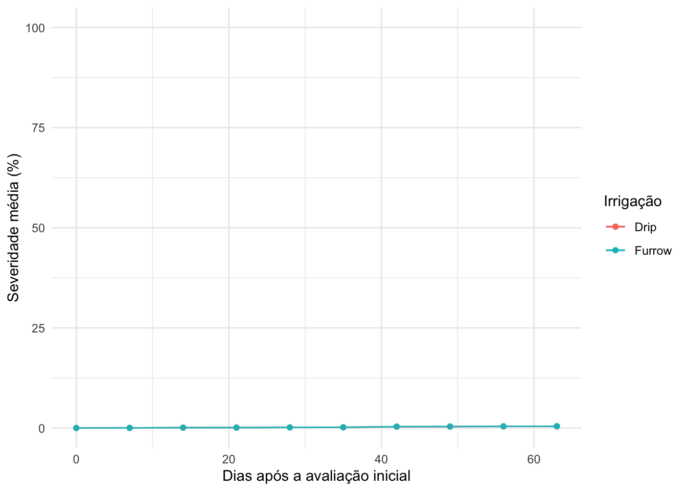
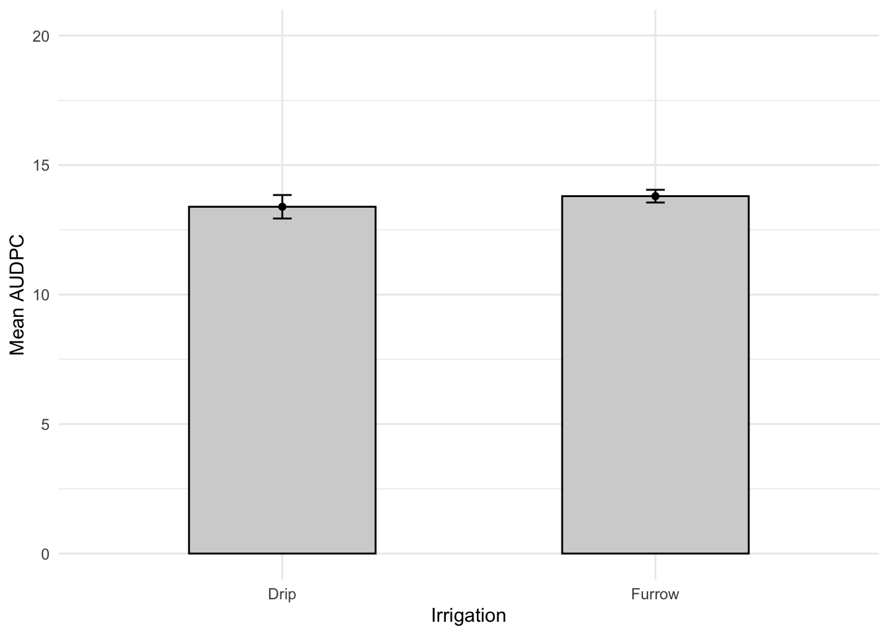
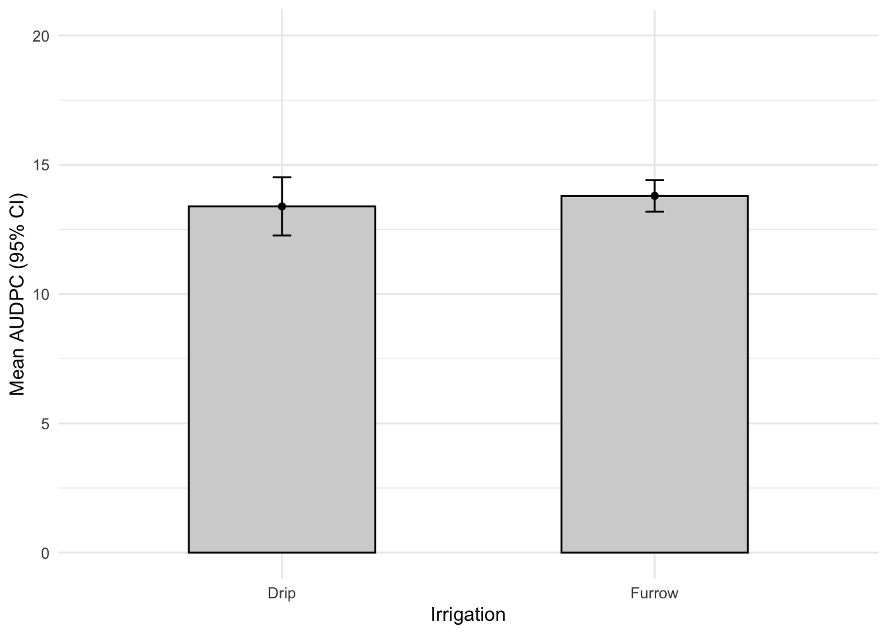
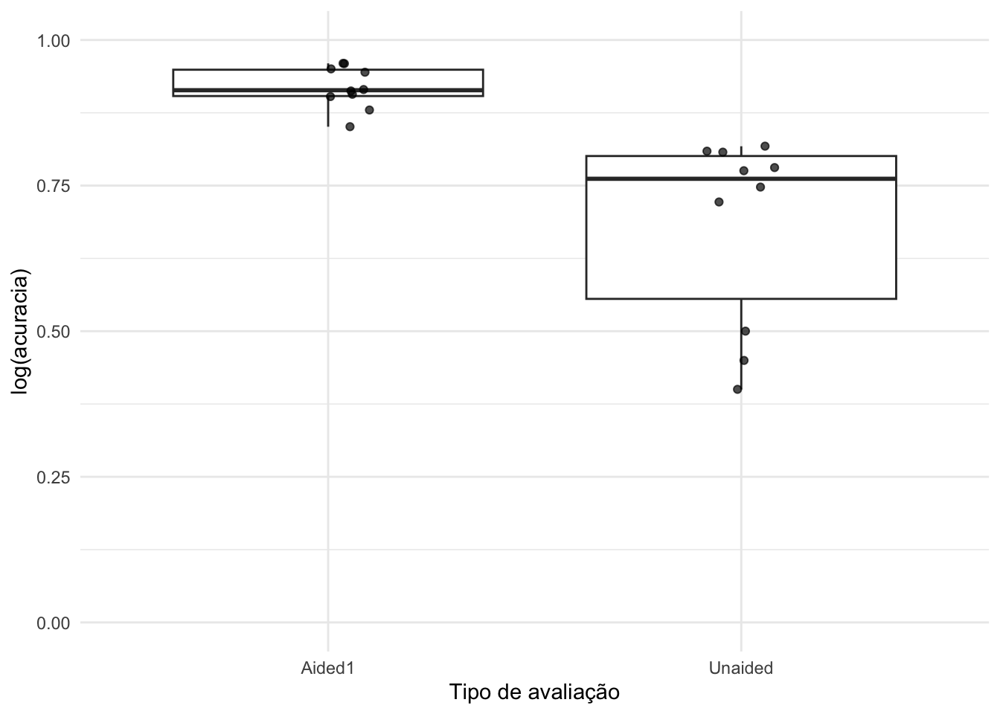
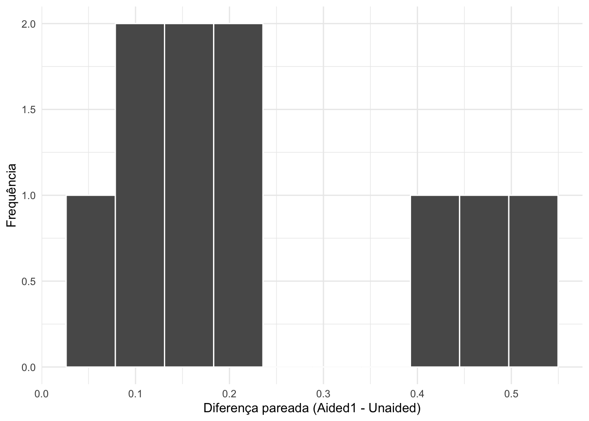
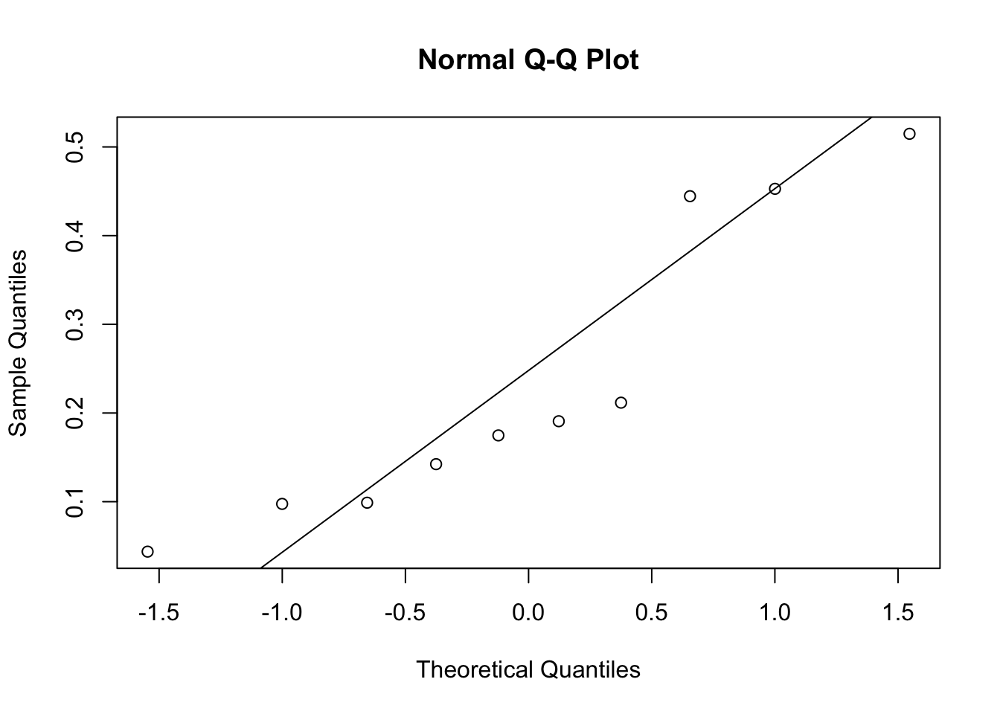
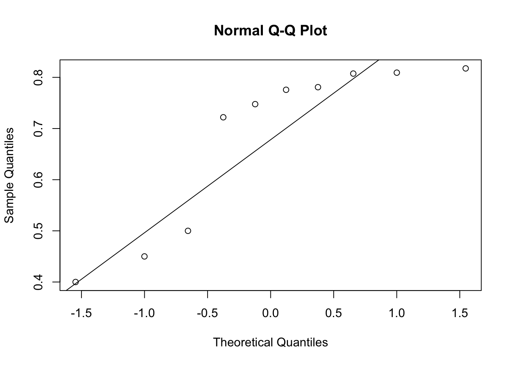

dados |>group_by(Irrigation, day) |>summarise(mean_sev =mean(severity),sd_sev =sd(severity)) |>ggplot(aes(day,mean_sev, group = Irrigation, color = Irrigation))+geom_point()+geom_errorbar(aes(ymin = mean_sev - sd_sev,ymax = mean_sev + sd_sev),width =0.1)+geom_line()+geom_errorbar(aes(ymin = mean_sev - sd_sev,ymax = mean_sev + sd_sev),width =0.1) +ylim(0, 100) +labs(x ="Dias após a avaliação inicial",y ="Severidade média (%)",color ="Irrigação" ) +theme_minimal()
`summarise()` has grouped output by 'Irrigation'. You can override using the
`.groups` argument.

# Area abaixo da curvalibrary(epifitter) dados |>group_by(Irrigation, rep) |>summarise(audpc =AUDPC(day, severity)) |># Calcula estatística média e sdgroup_by(Irrigation) |>summarise(mean_audpc =mean(audpc),sd_audpc =sd(audpc),n =n(), # Conta o tamanho da amostrase_audpc = sd_audpc /sqrt(n), # Calcula o erro padrão.groups ="drop") |># Faz o plotggplot(aes(Irrigation, mean_audpc))+geom_col(width =0.5, fill ="lightgray", color ="black")+geom_point()+geom_errorbar(aes(ymin = mean_audpc - sd_audpc,ymax = mean_audpc + sd_audpc),width =0.05)+ylim(0,20) +theme_minimal() +labs(y ="Mean AUDPC", x ="Irrigation")
`summarise()` has grouped output by 'Irrigation'. You can override using the
`.groups` argument.

# Script após Gemini com Intervalo de confiança dados |>group_by(Irrigation, rep) |>summarise(audpc =AUDPC(day, severity), .groups ="drop") |># Calcula estatísticas: média, sd, n, erro padrão (se) e margem de erro (ci)group_by(Irrigation) |>summarise(mean_audpc =mean(audpc),sd_audpc =sd(audpc),n =n(), se_audpc = sd_audpc /sqrt(n), # Erro padrãoci_audpc =qt(0.975, df = n -1) * se_audpc, # Margem de erro para 95% de confiança.groups ="drop") |># Faz o plot usando o intervalo de confiançaggplot(aes(x = Irrigation, y = mean_audpc)) +geom_col(width =0.5, fill ="lightgray", color ="black") +geom_point() +geom_errorbar(aes(ymin = mean_audpc - ci_audpc,ymax = mean_audpc + ci_audpc),width =0.05) +ylim(0, 20) +# Dica: verifique se o limite máximo (20) ainda comporta as novas barrastheme_minimal() +labs(y ="Mean AUDPC (95% CI)", x ="Irrigation")

library(rstatix)
Attaching package: 'rstatix'
The following object is masked from 'package:stats':
filter
dados2 <- dados |>group_by(Irrigation, rep) |>summarise(audpc =AUDPC(day, severity))
`summarise()` has grouped output by 'Irrigation'. You can override using the
`.groups` argument.
teste_t_audpc <-t.test(audpc ~ Irrigation, data = dados2)teste_t_audpc
Welch Two Sample t-test
data: audpc by Irrigation
t = -1.3773, df = 3.079, p-value = 0.26
alternative hypothesis: true difference in means between group Drip and group Furrow is not equal to 0
95 percent confidence interval:
-1.3421436 0.5231436
sample estimates:
mean in group Drip mean in group Furrow
13.38983 13.79933
escala <-read_excel("dados_diversos.xlsx","escala")escala |>ggplot(aes(assessment, acuracia)) +geom_boxplot(outlier.colour =NA) +geom_jitter (width =0.1, alpha =0.7)+# pode ter valores iguaislabs(x ="Tipo de avaliação", y ="log(acuracia)") +theme_minimal()+ylim(0,1)

# Reorganização da tabela para formato largo (cada linha corresponda a um avaliador e cada coluna a uma condição.)escala_wide <- escala |>select(rater, assessment, acuracia) |>pivot_wider(names_from = assessment,values_from = acuracia)## em salaescala
# A tibble: 20 × 7
assessment rater acuracia precisao vies_geral vies_sistematico vies_constante
<chr> <chr> <dbl> <dbl> <dbl> <dbl> <dbl>
1 Unaided A 0.809 0.826 0.979 1.19 0.112
2 Unaided B 0.722 0.728 0.991 0.922 -0.106
3 Unaided C 0.4 0.715 0.783 1.16 0.730
4 Unaided D 0.818 0.819 0.999 0.948 -0.00569
5 Unaided E 0.748 0.753 0.993 1.10 0.0719
6 Unaided F 0.45 0.751 0.925 0.802 0.336
7 Unaided G 0.807 0.823 0.981 1.16 0.132
8 Unaided H 0.781 0.869 0.898 1.07 -0.472
9 Unaided I 0.776 0.785 0.988 1.14 0.0888
10 Unaided J 0.5 0.834 0.740 0.652 -0.719
11 Aided1 A 0.907 0.949 0.955 0.894 -0.284
12 Aided1 B 0.913 0.959 0.952 0.892 -0.296
13 Aided1 C 0.915 0.963 0.950 1.28 0.212
14 Aided1 D 0.960 0.972 0.987 1.14 0.0891
15 Aided1 E 0.959 0.964 0.995 1.00 -0.0952
16 Aided1 F 0.903 0.973 0.928 0.860 -0.364
17 Aided1 G 0.851 0.954 0.892 0.828 -0.454
18 Aided1 H 0.880 0.974 0.903 1.29 0.385
19 Aided1 I 0.950 0.962 0.988 1.14 0.0706
20 Aided1 J 0.944 0.956 0.988 0.911 -0.126
Welch Two Sample t-test
data: acuracia by assessment
t = 4.475, df = 9.8601, p-value = 0.00123
alternative hypothesis: true difference in means between group Aided1 and group Unaided is not equal to 0
95 percent confidence interval:
0.1188441 0.3554603
sample estimates:
mean in group Aided1 mean in group Unaided
0.9181913 0.6810391
Paired t-test
data: escala_wide$Unaided and escala_wide$Aided1
t = -4.4266, df = 9, p-value = 0.001655
alternative hypothesis: true mean difference is not equal to 0
95 percent confidence interval:
-0.3583453 -0.1159591
sample estimates:
mean difference
-0.2371522
Paired t-test
data: escala_wide$Aided1 and escala_wide$Unaided
t = 4.4266, df = 9, p-value = 0.001655
alternative hypothesis: true mean difference is not equal to 0
95 percent confidence interval:
0.1159591 0.3583453
sample estimates:
mean difference
0.2371522
## Visualização das diferençasdiferencas <- escala_wide |>mutate(diff = Aided1 - Unaided)diferencas |>ggplot(aes(x = diff)) +geom_histogram(bins =10, color ="white") +labs(x ="Diferença pareada (Aided1 - Unaided)", y ="Frequência") +theme_minimal()

# Verificação da normalidade e alternativa não paramétrica. Não é necessário que cada grupo separadamente seja normal; o foco está nas diferenças.qqnorm(diferencas$diff)qqline(diferencas$diff)

shapiro.test(diferencas$diff)
Shapiro-Wilk normality test
data: diferencas$diff
W = 0.8566, p-value = 0.06956
# Feito em aulaqqnorm(escala_wide$Unaided)qqline(escala_wide$Unaided)

shapiro.test(escala_wide$Unaided)
Shapiro-Wilk normality test
data: escala_wide$Unaided
W = 0.77356, p-value = 0.00691
Shapiro-Wilk normality test
data: escala_wide$Aided1
W = 0.92775, p-value = 0.4261
# Teste para quando a suposição de normalidade das diferenças for claramente violada. Wilcoxon para dados PAREADOSwilcox.test(escala_wide$Unaided, escala_wide$Aided1,paired =TRUE)
Wilcoxon signed rank exact test
data: escala_wide$Unaided and escala_wide$Aided1
V = 0, p-value = 0.001953
alternative hypothesis: true location shift is not equal to 0